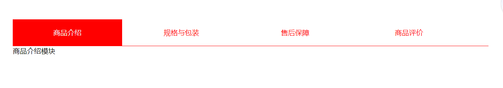

tab栏切换制作
先上图

要求1：默认状态，第一个选项卡被选中，展示第一个选项卡的内容
策略：第一个选项卡默认有被选中的样式，第一个选项卡对应的display: block，其他的dispaly设为none
要求2: 选项卡模块：被点击的变为红底白字，其他的变为白底红字
策略：排他思想，每次点击一个选项卡时，先把其他选项卡设为默认样式，然后自己设为被选中的样式。这里我们先在style里面设置一个新的class,把这个样式给被选中的选项卡。
要求3：每点击某个选中卡，出现对应的模块内容，点击第一个li，展示第一个div,点击第几个li，展示第几个div......，如何知道选中了第几个li呢?
策略：利用for循环，给每个li设置一个自定义属性，每点击这个li，得到该liindex的属性的值
代码部分：
1 <body>
2 <div class="con">
3 <div class="tab_list">
4 <ul>
5 <!-- 第一个默认被选中 -->
6 <li class="tabChange">商品介绍</li>
7 <li>规格与包装</li>
8 <li>售后保障</li>
9 <li>商品评价</li>
10 </ul>
11 </div>
12 <div class="tab_containt">
13 <div style="display: block">商品介绍模块</div>
14 <div>规格与包装模块</div>
15 <div>售后保障模块</div>
16 <div>商品评价模块</div>
17 </div>
18 </div>样式：
1 <style>
2 * {
3 padding: 0;
4 margin: 0;
5 }
6
7 .con {
8 width: 70%;
9 margin: 50px auto;
10 }
11
12 .tab_list {
13 border-bottom: 1px solid red;
14 height: 60px;
15 }
16
17 .tab_list ul {}
18
19 .tab_list ul li {
20 list-style: none;
21 margin-right: 10px;
22 width: 23%;
23 height: 60px;
24 line-height: 60px;
25 color: red;
26 float: left;
27 text-align: center;
28 cursor: pointer;
29 }
30
31 .tab_containt div {
32 display: none;
33 }
34
35 .tab_list ul .tabChange {
36 color: aliceblue;
37 background-color: red;
38 }js部分：
1 <script>
2 // 切换选项卡时选项卡模块：被点击的变为红底白字，其他的变为白底红字,所以要用到排他思想
3 var lis = document.querySelector(".tab_list").querySelectorAll("li");
4 var items = document.querySelector(".tab_containt").querySelectorAll("div");
5 //console.log(items);
6
7 //console.log(lis);
8 //给所有的li注册点击事件
9 for (var i = 0; i < lis.length; i++) {
10 // 点击第一个li，展示第一个div,点击第几个li，展示第几个div......this
11 // 那么我们如何知道点击了第几个li呢？思路：给li设置一个自定义属性，那么如何给5个li都设置带有编号的index呢，当然用for循环啦
12 lis[i].setAttribute("index", i);
13 lis[i].onclick = function() {
14 //console.log("dianij");
15 //排他
16 for (var i = 0; i < lis.length; i++) {
17 lis[i].className = "";
18 }
19 //成就自己
20 this.className = "tabChange";
21 //得到选项卡的index属性值
22 var index = this.getAttribute("index");
23 //console.log(index);
24
25 //先排他思想，清除其他的内容显示第index个div的内容
26 for (var i = 0; i < items.length; i++) {
27 items[i].style.display = "none";
28 }
29 //使第index个盒子的内容显示
30 items[index].style.display = "block";
31
32 }
33 }
34 </script>